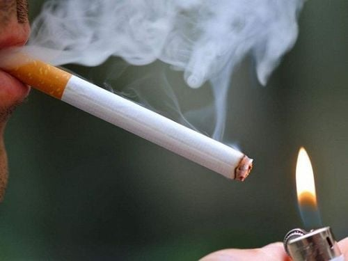

Keep your breath as long as you can. Press Stop! when you release.
1. A simple another way to test healthy lungs yourself
1.1. How to self-check lung health One of the ways to check lung health includes:
Method 1: Assess lung function by climbing stairs. This method is done by taking the stairs from the 1st floor to the 3rd floor at a slow, normal speed. If you don't have to stop to rest or you don't appear to be out of breath at the end of the exercise, your lungs are at a stable level. Conversely, if you feel short of breath and need to stop and rest several times while climbing stairs, then your lung function may be weak or unstable. Method 2: Assess lung function by blowing out candles. First, you need to prepare a candle and light it. Next, place the candle at a position about 15cm from the standing position, level with the blowing range. Then you proceed to blow out the candles. If you only need one breath to blow out the candle, your lung function is stable. If you blow a few times and the candle still doesn't go out, this could be a sign of lung problems. Method 3: Check the health of the lungs by running in place. You can do this by running in place at a moderate pace until you feel tired and have to stop. After stopping for about 5-6 minutes, the body can return to normal, this is a sign that the lungs are healthy. If it takes longer for you to return to normal, it could be a sign of weak lungs. Method 4: Assess the ability of the lungs to store oxygen and gas. First, take a deep breath, and at the same time expand your belly, then hold your breath, taking care not to let the breath out through the nose and mouth. If you can hold your breath for 30 seconds, lung function is very good. If you can only hold your breath for less than 20 seconds, your lung function may not be good or you may have a health problem.
1.2. Laboratory methods of lung function test The methods of self-checking lung function at home are only for reference, the most accurate way to check is to perform some laboratory methods at medical facilities. Especially men aged 50 years and over, or those who smoke cigarettes and have a persistent dry cough, symptoms of coughing up sputum and blood, etc., they need to see a doctor immediately. Some tests to check lung function can be mentioned as:
Clinical examination: The doctor will initially perform a preliminary examination, listen to the lungs and collect information about symptoms as well as personal medical history. as well as family. Chest X-ray: A method to help doctors observe and accurately recognize abnormal manifestations in the lungs. Computed tomography of the chest : in the case of chest X-ray with suspicion of abnormal lesions, doctors may order computed tomography of the chest to help detect lung lesions. more precisely. Take a sample of the patient's sputum or blood.
2. How our lungs are work
Our lungs play a critical role in the respiratory system, helping us bring in oxygen (essential for our cells) and get rid of carbon dioxide (a waste product). Here’s how they work:
Inhaling (Breathing In): When you breathe in, your diaphragm (a dome-shaped muscle at the bottom of your chest) contracts and moves downward, creating more space in your chest cavity. This drop in pressure pulls air into your lungs through your nose or mouth.
Air Passage: The air travels down your windpipe (trachea) and into the bronchi, which are two tubes that split off and carry air into each lung. The bronchi branch into smaller tubes called bronchioles, which end in tiny air sacs called alveoli.
Gas Exchange in Alveoli: Alveoli are small, balloon-like structures with thin walls, surrounded by tiny blood vessels (capillaries). When air reaches the alveoli, oxygen passes through their walls and into the blood, while carbon dioxide moves from the blood into the alveoli.
Exhaling (Breathing Out): After gas exchange, the diaphragm relaxes and moves back up, squeezing the lungs and pushing carbon dioxide-rich air back out through the same pathway.
Oxygen Transport: The oxygen absorbed into the blood attaches to hemoglobin in red blood cells, which carry it throughout your body.
3. How to have a healthy lung?
To have a healthy lung as well as a supple health, it is necessary to take measures such as:
Limit exposure to smoke: People who smoke or regularly breathe secondhand smoke have a high risk of developing lung cancer. lung disease, especially lung cancer. Therefore, to keep your lungs healthy, you need to stay away from tobacco smoke and give up smoking. Exercise regularly: Exercise is one of the simple measures that can help you have a strong, toned body and help your lungs get stronger. During exercise, the lungs will exchange gases more vigorously and work more efficiently. Whole-body exercises or lung-specific exercises by practicing inhaling through the abdomen and using all your strength to exhale, pushing the flow when the residue in the lungs. This deep breathing exercise will help the lungs receive oxygen and remove CO2, as well as distribute oxygen to the organs in the body more efficiently. In addition, sitting in the right posture also helps the lungs expand properly and does not affect breathing. Limit exposure to polluted environments: Regular exposure to chemicals, polluted environments, and dust will increase the risk of lung diseases. Therefore, to help keep the lungs healthy, it is necessary to limit exposure to polluted environments, chemicals and dust. Supplement nutrition and water: A balanced diet will help improve resistance. Fortified with vitamins and minerals, healthy foods. Besides, it is necessary to drink enough 1.5 liters - 2 liters of water per day for the body's activities to take place more rhythmically.

In summary, Lungs are one of the very important organs of the human body, especially the respiratory system. To check lung function, you can do simple measures at home such as climbing stairs, blowing out candles,... However, this measure is for reference only, to test healthy lungs or not. To be precise, laboratory tests should be performed.
4. Home workout for healthy Lungh
A healthy set of lungs can be supported by exercises that improve lung capacity, endurance, and overall respiratory function. Here’s a home workout routine to keep your lungs healthy:
Deep Breathing Exercises
How to Do It: Sit or lie down comfortably. Take a slow, deep breath through your nose, filling your lungs entirely. Hold for a few seconds, then slowly exhale through your mouth.
Reps: Repeat 10 times. Do this exercise 2-3 times a day.
Benefits: Helps increase lung capacity and improve oxygen flow.
Pursed-Lip Breathing
How to Do It: Inhale through your nose, then slowly exhale through pursed lips (like you’re blowing out a candle).
Reps: Do this for 5-10 minutes.
Benefits: Helps slow your breathing, making each breath more effective and easing airflow resistance.
Diaphragmatic Breathing (Belly Breathing)
How to Do It: Place one hand on your chest and the other on your belly. Take a deep breath in through your nose, focusing on expanding your belly rather than your chest. Exhale slowly through your mouth.
Reps: Practice for 5-10 minutes.
Benefits: Strengthens the diaphragm and encourages fuller lung capacity.
Cardio (Low-Intensity)
Options: Brisk walking, jumping jacks, marching in place, or dancing.
How to Do It: Aim for 10-20 minutes at a steady pace that elevates your heart rate but still allows you to talk.
Benefits: Cardio exercises improve endurance, increase lung efficiency, and help build overall stamina.
Stretching and Yoga
Exercises: Cobra pose, cat-cow stretch, and side stretches.
How to Do It: Spend 5 minutes stretching and holding each position for 10-15 seconds.
Benefits: Helps open up the chest and improve posture, which gives your lungs more space to expand.
Interval Training
How to Do It: Alternate between 30 seconds of high-intensity activity (like fast-paced jogging in place or jumping jacks) and 1 minute of rest.
Duration: Repeat for 5-10 minutes.
Benefits: Challenges your lungs to take in more air during active periods and strengthens lung function.
Balloon Blowing Exercise
How to Do It: Take a deep breath and blow up a balloon. This can be repeated for 3-5 minutes.
Benefits: Helps improve lung capacity by creating resistance when you blow out.
Doing these exercises regularly will help you maintain strong, healthy lungs. Make sure to consult with a healthcare provider if you have any lung conditions or experience discomfort during any of these exercises.
Doing these exercises regularly will help you maintain strong, healthy lungs. Make sure to consult with a healthcare provider if you have any lung conditions or experience discomfort during any of these exercises.
To keep your lungs healthy, avoid smoking and secondhand smoke, exercise regularly with cardio to boost lung capacity, and practice deep breathing to strengthen lung function. Maintain good indoor air quality by ventilating rooms and using air purifiers, stay hydrated to keep airways clear, and limit outdoor pollution exposure by checking air quality levels. Get vaccinated to protect against respiratory infections, practice good posture to allow for full lung expansion, wash hands often to prevent infections, and go for regular checkups to detect any early lung issues. These steps can help your lungs stay strong and efficient over time.